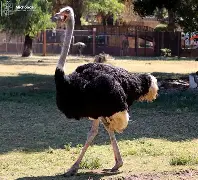

AVESTRUS

El avestruz (Struthio camelus) es un ave no voladora perteneciente a la familia Struthionidae.
Es el pájaro vivo más grande, midiendo 2,75 metros y alcanzando un peso de 150 kilos. Nativa del continente africano, habita en zonas abiertas
y en hábitats arenosos y áridos. Es un animal herbívoro, que también suele consumir algunos animales, como langostas y roedores, y también carroña.